意见反馈
下厨房
首页
菜谱分类
常用主题
家常菜
快手菜
下饭菜
早餐
减肥
汤羹
烘焙
小吃
常见食材
猪肉
鸡肉
牛肉
鱼
鸡蛋
土豆
茄子
豆腐
时令食材
螃蟹
9.9
猪油
9.8
丝瓜
9.8
秋葵
8.5
鸡腿
7.9
无花果
7.9
鸭
7.5
冬瓜
7.3
查看全部分类
菜单
作品动态
登录
注册
ie
家常菜
快手菜
下饭菜
早餐
肉
猪肉
排骨
五花肉
里脊
猪肉末
瘦肉
猪蹄
猪肝
更多
鸡
鸡腿
鸡翅
鸡肉
鸡爪
土鸡
三黄鸡
鸡胗
更多
牛肉
牛腩
肥牛
牛排
牛肉末
牛瘦肉
牛尾
牛筋
更多
鸭
鸭腿
鸭翅
鸭胗
鸭掌
老鸭
鸭脖
鸭舌
更多
羊肉
羊腿
羊肉片
羊排
羊蝎子
鱼
蔬菜
果实类蔬菜
茄子
番茄
玉米
南瓜
丝瓜
冬瓜
豆角
更多
根茎蔬菜
土豆
萝卜
藕
山药
笋
红薯
芋头
更多
菌菇类
香菇
杏鲍菇
金针菇
木耳
茶树菇
猴头菇
平菇
更多
叶类蔬菜
韭菜
菠菜
圆白菜
油菜
娃娃菜
空心菜
油麦菜
更多
鸡蛋
汤羹
烘焙
主食
面
素食
孕妇
产妇
婴儿
儿童
全部菜谱分类
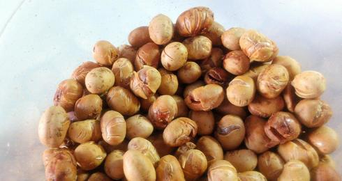
香烤黄豆（无油香脆小零嘴）
136 人做过这道菜
by 空空爱美食
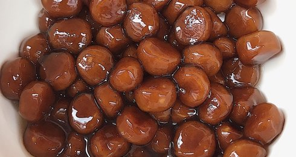
简易版自制珍珠奶茶（附视频）
12 人做过这道菜
by sasajohn
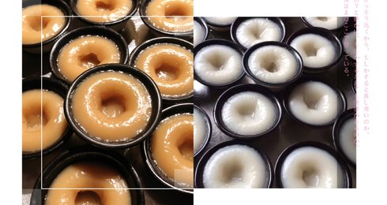
传统钵仔糕（只用粘米粉也能做出Q弹口感的秘诀）
30 人做过这道菜
by MaggieW_鸣鸣
红烧狮子头
490 人做过这道菜
by 万万
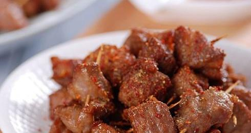
牙签肉
886 人做过这道菜
by 万万
1
2
3
4
5
新秀菜谱
全部
<
>
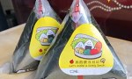
三角饭团寿司便当（寿司醋做法➕包饭团视频）
haileybear
10 做过
剁椒鱼头（零失败）
来自新西兰的小鲸鱼er
10 做过
高颜值 高营养 免烤箱 狗狗蛋糕(狗吃的蛋糕)
学霸桃子君
10 做过
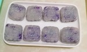
冰皮月饼（最简单的做法）
阿娇1834
10 做过
卡通馒头（龙猫-刀切版）
猫小咪Mia
17 做过
最受欢迎的鸡丝凉面
香水厨娘
12 做过
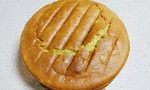
香蕉戚风蛋糕8寸
在爱的厨房烹饪温暖
10 做过
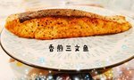
香煎三文鱼
17小奇
10 做过
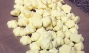
超级无敌好吃到爆炸！无添加超简单！宝宝全蛋溶豆！入口即化！材料只有一个鸡蛋 ！10g奶粉！5g淀粉 ！正好一盘 ！比酸奶溶豆还要酥脆可口 ！幸福的味道 ！
司司爱烘焙
10 做过
火腿蛋炒饭
贪吃的小姑娘cc
11 做过
虾仁兴化米粉
舞之灵
10 做过
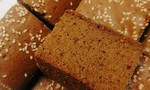
最简单枣糕
胖胖嘿嘿
12 做过
自制酸辣粉，比买的好吃十倍不止
美食妃英理
10 做过
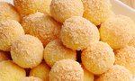
椰蓉球
懒饭App
10 做过
方便好吃到尖叫的大韭菜饼（比其他韭菜盒子都好吃）
打死不叫外卖-你的美食专家
11 做过
最近流行
全部
凉拌金针菇
美美6375_xw19
102 做过
停不下来的秘制凉拌鸡爪
文文就是个吃货
188 做过
炒方便面￨幸福感爆棚
悠悠食记
240 做过
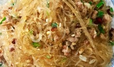
蒜蓉粉丝煲
洛阳李青霞
359 做过
《Tinrry+》教你做广式大月饼（芋泥+麻薯+咸蛋黄肉松）
Tinrry甜悦
230 做过
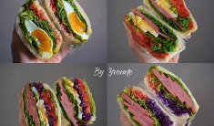
我的三明治我做主
Yvonne徐
313 做过
葱爆虾仁
E路拾缘
1419 做过
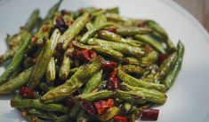
干煸四季豆
小白素食记录
1271 做过
最省力气、不需摔面快速出手套膜（后酵母法）
笑与鱼尾纹
2596 做过
蛋糕卷，肉松蛋糕卷，网红贝贝肉松卷
美丽女神经
1082 做过
香辣烧鸡爪
冇伱灬冇我
6792 做过
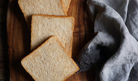
全麦吐司
哈奇0328
1745 做过
时令食材
全部
螃蟹
猪油
丝瓜
秋葵
鸡腿
无花果
鸭
冬瓜
基围虾
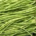
豇豆
苦瓜
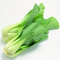
小白菜
参照
1527273
菜谱，大家做出
53392856
作品
最新上传
正在流行
24小时最佳
#罗勒#
罗勒，也就是九层塔，最初是在台式三杯鸡中结识，那种奇特的香味个性鲜明，让人“耳目一新”。罗勒在东南亚菜系中时常见到。
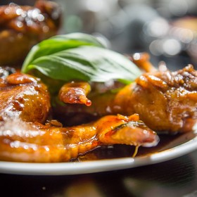
#时•食#
品人生•味生活......
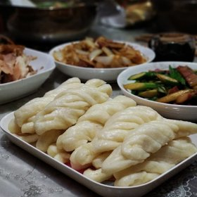
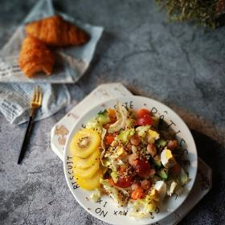
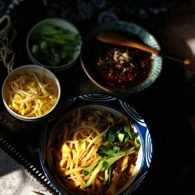
#Helen的烘焙手做#
记录我手做的那些烘焙，我依旧是那个小任性，爱做烘焙的邻家女孩。
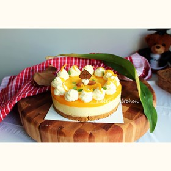
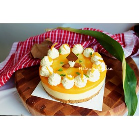
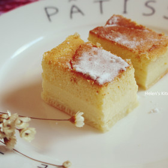
#KRUPS#
KRUPS
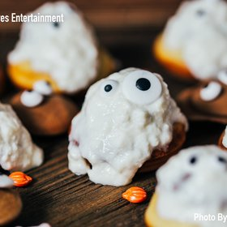
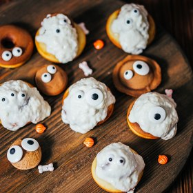
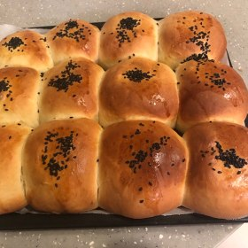
#九月独自生活#
九月的日常
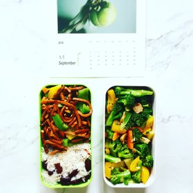
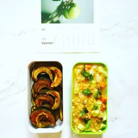
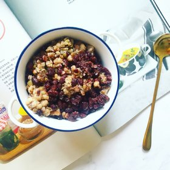
#24小时流行作品#
每张照片背后都有故事，几句寒暄传递生活的力量。
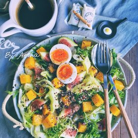
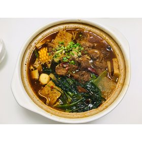
QQ 登录
微博登录
手机/邮箱登录
|
注册
网上不良信息举报专区
ie
流行搜索
1
蛋黄酥
2
月饼
3
冰皮月饼
4
虾
5
螃蟹
6
牛肉
7
中秋节菜谱
8
广式月饼
9
大闸蟹
10
汤
ie
流行菜单
全部
高分又好做面包
異國風味
粉！粉！粉！
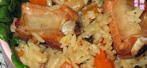
便当
下厨房的厨友们
更多
cooking_mama
5992 关注
31 个菜谱 1441 个作品
关注
我型我秀-1
4561 关注
7 个菜谱 773 个作品
关注
森货货货大彩
5100 关注
57 个菜谱 3637 个作品
关注
supervivi0620
82 关注
612 个作品
关注
达敷
134 关注
1 个菜谱 925 个作品
关注
燕飞飞-2
43 关注
236 个作品
关注
萱诚鸣的妈咪
7227 关注
135 个菜谱 1248 个作品
关注
查看更多